A booking platform for sports facilities in North Macedonia. Players find a court and reserve it by the hour. Venues manage their courts, prices and schedule from one panel.
Version 1.0 · September 2026
Web application built with Laravel, Livewire and Filament. All screenshots in this document are taken from the running application with its sample data.
1What Sport Manager is3
2Who uses it4
3The player experience5
4The facility manager experience10
5The administrator experience12
6Rules the system enforces13
7How it is built14
8Quality and security16
9Running the application17
10Limitations and next steps18
Renting a football pitch, a tennis court or a swimming lane in Macedonia today is a phone call. You call the venue, ask what is free, wait while someone checks a paper diary, and hope the slot is still open when you arrive. If the first venue is full, you call the next one. Venues have the mirror problem: a phone that rings all afternoon, a diary that only one person can see, and no way to show their availability to people who have never heard of them.
Sport Manager replaces the phone call. It is a web application with two faces.
For players it is a public website. You choose a city, a sport and a date, see every venue that matches with its price per hour and rating, open one, and see an hour-by-hour grid of which courts are free. You pick a slot, add equipment if you need it, see the exact price, and confirm. The booking lands in your account with a QR code you show at the door. If plans change, you cancel from the same page, as long as it is more than a day in advance. Once you have a booking somewhere, you can rate the venue.
For venues it is a management panel. A facility manager logs in and sees only their own venues. They set opening and closing hours, add and price their courts, keep a catalogue of rentable equipment, see every booking that comes in, and read the reviews players leave. A platform administrator sees everything across all venues and decides which manager is responsible for which facility.
Both faces run on the same data. When a player books a slot, it disappears from the grid for everyone else at that instant and appears in the manager's booking list. When a manager changes closing time from 22:00 to 23:00, the public grid grows by one row.
The sample installation ships with five venues in Skopje, Bitola, Ohrid, Tetovo and Prilep, fifteen courts across football, tennis, padel and swimming, and a small rental catalogue. Everything in this document is shown with that data.
Anyone who wants to play. No account is needed to browse and check availability. An account is created in one step, with a name, email and password, the moment someone wants to actually reserve. Players see the public website only. They never see the admin panel and cannot reach it even if they know the address.
The person who runs one or more venues. They have an account on the same system, but with the manager role, and they use the admin panel at /admin. The panel shows them only the facilities an administrator has assigned to them. A manager of Central Sports Hall cannot see, edit or even list the courts and bookings of Bitola Sports Arena. This is enforced in every list and every save, not just hidden in the menu.
Managers can edit their facility's description, address, opening and closing hours and amenities. They can add, price and remove courts. They can manage the equipment rental catalogue for their venue. They see all bookings on their courts and can correct them if a player calls. They can read reviews but not alter or delete them.
The operator of Sport Manager itself. Administrators see every venue, every court, every booking and every review. They are the only people who can create new facilities, manage the shared list of amenities, and assign managers to facilities. In practice, onboarding a new venue is an administrator task: create the facility, then assign the venue's staff member as its manager. From that point on the manager is self-sufficient.
A player books, a manager fulfils, an administrator keeps the catalogue clean and decides who is responsible for what. Nothing a manager does can leak into another venue, and nothing a player does can touch the admin side. The rest of this document walks through each of those three experiences with the actual screens.
The homepage is the search page. The three controls at the top are the ones people actually use: city, sport and date. Below them, amenity toggles narrow the list to venues with parking, showers, lockers, a cafe or Wi‑Fi, and a sort control reorders by rating, price or number of reviews. Every change updates the results immediately without a page reload. Each card shows the venue, its city, its main amenities, the average rating with the number of reviews behind it, and the lowest hourly price among its courts.
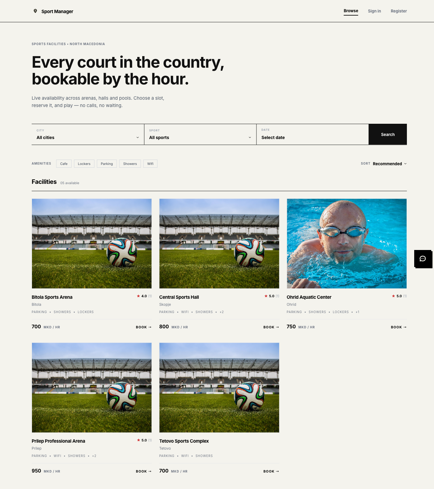
Filters combine. Below, the search is narrowed to football in Skopje, sorted by price. The filter state lives in the page address, so a player can copy the link and send it to a friend, and the friend opens the same filtered view.
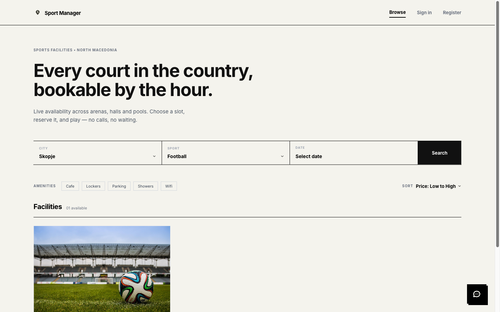
Opening a venue shows everything a player needs to decide: photos, a short description, the amenity list, the address and opening hours, existing reviews, and the availability grid. The grid is the heart of the page. Each court gets its own block with its sport and hourly price, and one button per hour between the venue's opening and closing time. Slots that have already passed today, or that someone else has booked, are greyed out and struck through. Changing the date at the top redraws the grid for that day.
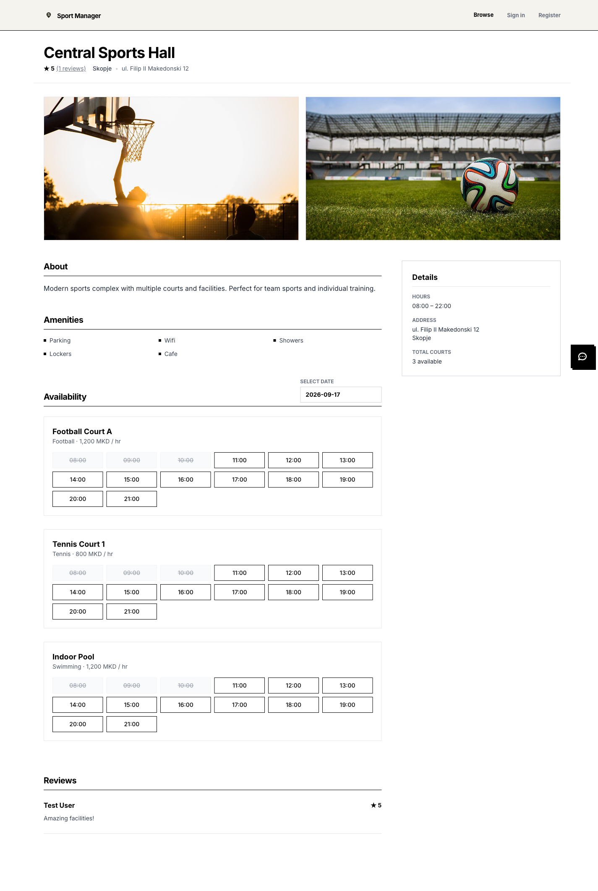
Clicking a free slot opens the confirmation panel. If the player is not signed in, confirming sends them to the sign‑in page; after signing in they return to the homepage and pick the slot again. The panel names the court, the date and the hour, then lists the equipment available for that sport at that venue. A football court offers a ball and shin guards, a pool offers goggles and a swim cap. Ticking an item adds it to the total straight away.
The price is itemised so there are no surprises. The base price is the court's hourly rate. Evening slots between 18:00 and 22:00 carry a twenty percent surcharge, weekend slots a further ten percent, and equipment is added on top. The example below is a Saturday at 18:00, so both surcharges apply.
Pressing Confirm Reservation creates the booking. If two people try to take the same slot at the same moment, exactly one succeeds. The confirmation runs inside a database transaction that checks for overlapping bookings, and the database itself refuses a second booking with the same court and hour, so the loser is told the slot has just been taken.
After confirming, the player lands on their dashboard. Upcoming reservations are listed with the court, venue, date, time, total paid and status, and each has a QR code. The code is unique to the booking and is what the venue scans or reads at the door. A second tab holds past and cancelled bookings, so the history is never lost.
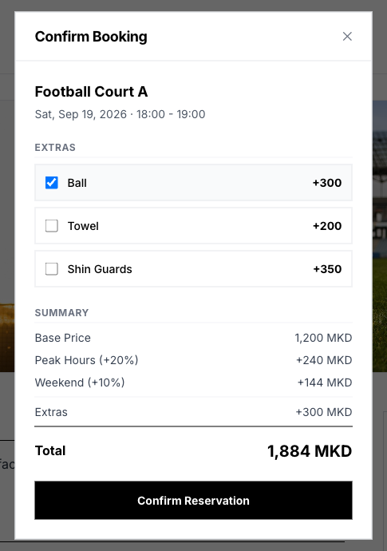
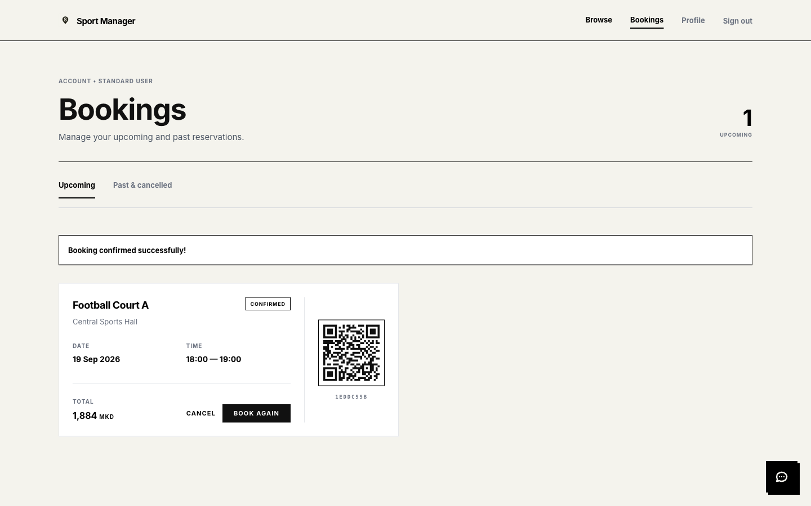
The Cancel button is only offered when the booking starts more than 24 hours from now. Inside that window the button is gone, and even a direct attempt is refused with a clear message. Cancelled slots are released immediately and reappear in the grid for other players.
The profile page lets a player change their name, email and phone number and set a new password. A password change requires the current password.
Reviews are gated on booking. The review form appears on a facility page only for a signed‑in player who has at least one booking at that venue that was not cancelled. An upcoming confirmed booking counts, so a player may review before the day of play. A player who never booked there does not see the form. A player who already reviewed the venue does not see it either; it is one review per person per venue, and the rule is enforced in the database as well as in the interface. The rating is one to five stars, the comment is optional. A posted review appears in the list immediately and the venue's average updates everywhere it is shown.
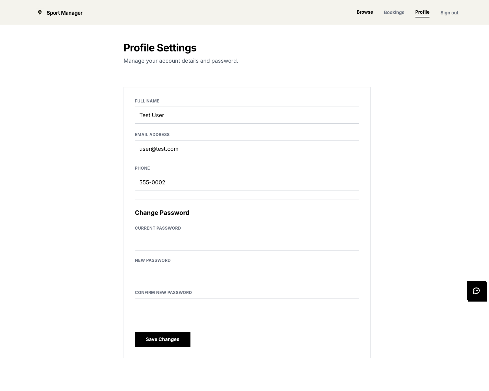
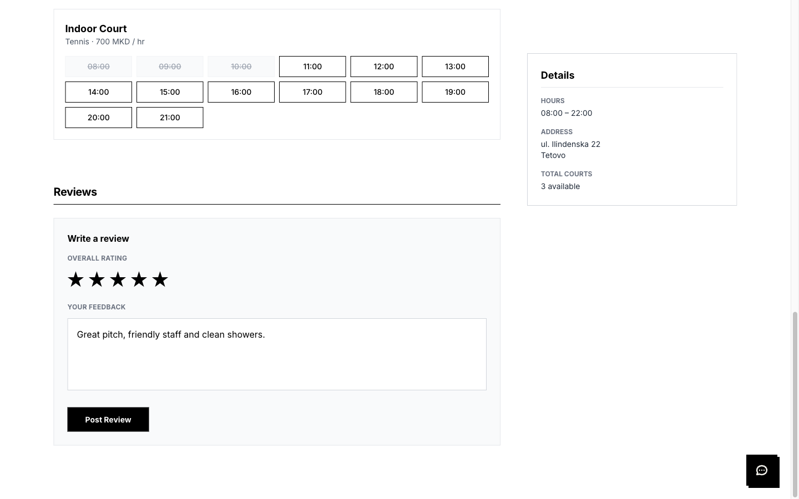
A chat button sits in the corner of every public page. Sporty answers questions in plain language: where can I play padel, what does a tennis court cost in Ohrid, what are the cancellation rules. It reads live data, so its answers reflect the current catalogue and prices. It can also check whether a specific court is free at a specific time and prepare a booking; a signed‑in player confirms it with one click inside the chat. The chat path uses the same price calculation, the same overlap check and the same one‑hour slot and opening‑hours rules as the facility page, but does not offer equipment rentals.
Sporty has two modes. With a Google Gemini key configured it holds a free‑form conversation. Without a key it runs in a demo mode that recognises common questions and answers from the database, which is what the screenshot shows.
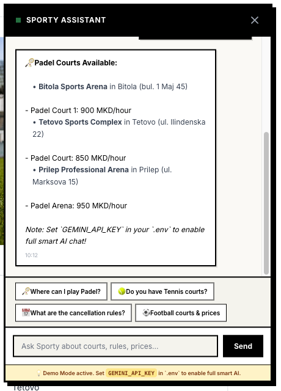
Managers use the admin panel at /admin. It has its own sign‑in, separate from the public site. The left menu lists Bookings, Courts, Facilities, Rentals and Reviews. Notice what is missing: Amenities. The shared amenity list is platform‑wide and only administrators may change it.
The sample manager is assigned to two of the five venues. The Facilities list shows exactly those two. The same scoping applies to Courts, Bookings, Rentals and Reviews: every list is filtered to the manager's facilities, every edit checks that the record belongs to one of them, and every form that lets you pick a facility or a court offers only theirs. A manager cannot create a new facility; that is an administrator's job.
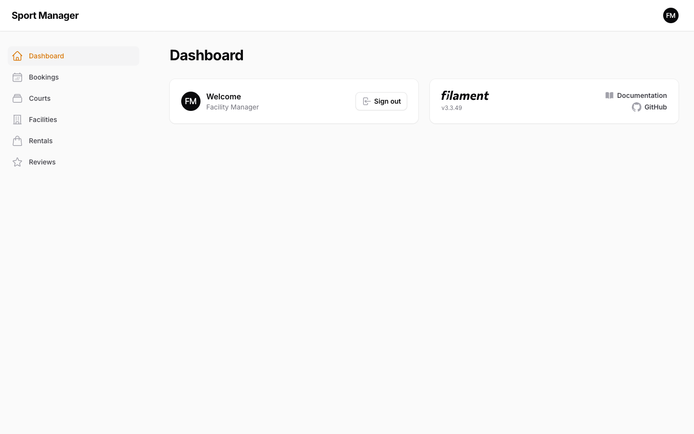
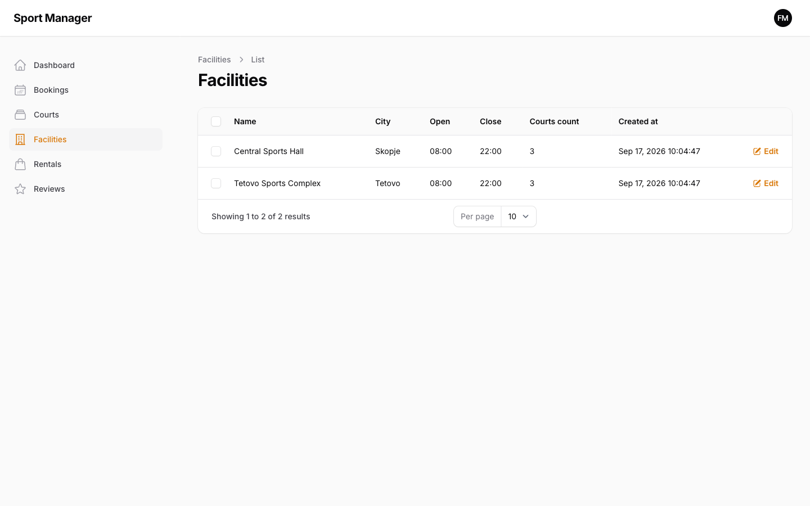
Editing a facility is where a manager sets the venue up. Opening and closing hours are whole hours in 24‑hour format and directly control the public availability grid: set 7 and 23 and the grid shows 07:00 through 22:00. The form refuses a closing hour that is not later than the opening hour. The same form holds the description and address shown to players, the cover image, and the amenity checkboxes that drive the public filters.
Courts are added under the Courts menu with a name, a sport, a facility from the manager's own list and a base price per hour. Rentals work the same way: a name, a price, the facility, and which sports the item suits, so a swim cap is never offered on a football pitch. Bookings shows every reservation on the manager's courts with the player's name, court, time, status and total. Managers can create a booking on behalf of a walk‑in customer or correct a status, for example marking a booking as checked in when the player arrives.
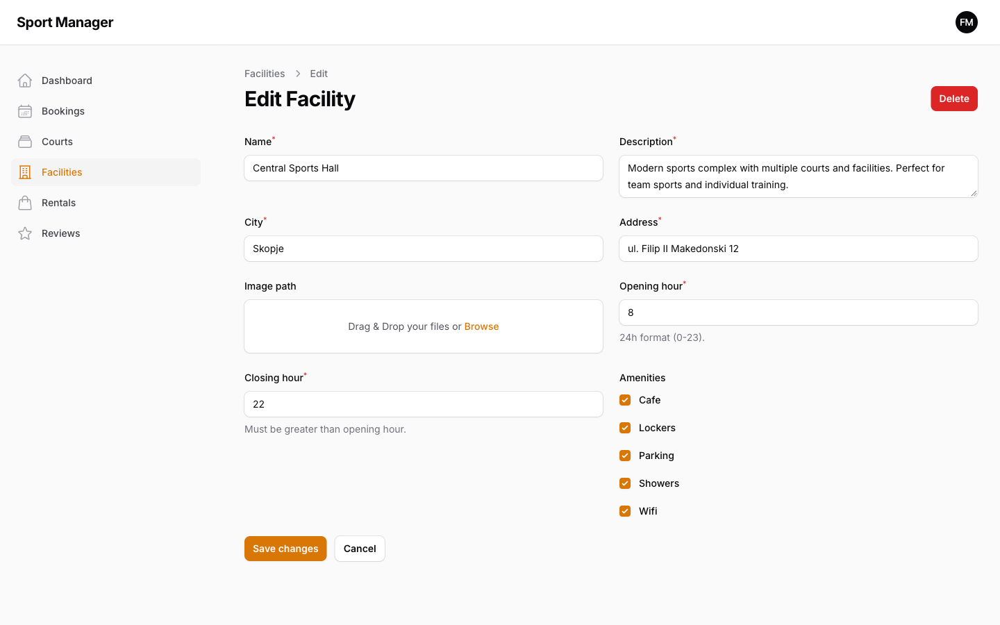
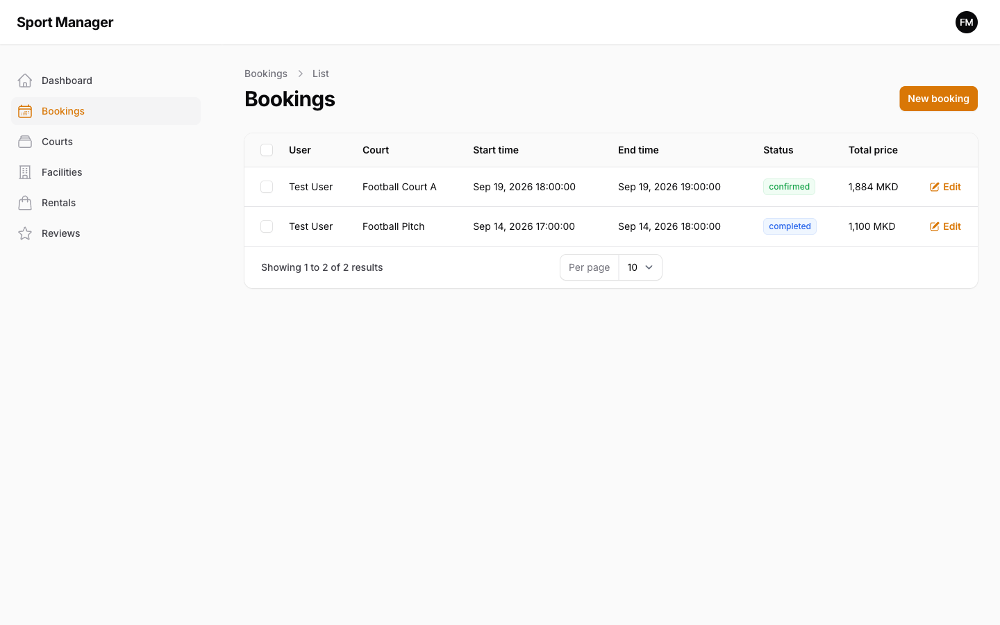
Managers can read every review left for their venues, with the rating, comment and author. They cannot edit or delete reviews. That is deliberate: a rating players can trust is worth more to a venue than the ability to remove a bad one.
Administrators sign in to the same panel and see the whole platform. The Facilities list shows all five venues and gains a New Facility button. An Amenities entry appears in the menu. Every list across Courts, Bookings, Rentals and Reviews is unfiltered, and administrators may create, edit and delete anything, including reviews when moderation is needed.
The Courts list gives administrators a single view of every bookable court in the country with its sport, venue and price. Prices are shown in denar everywhere in the panel, exactly as players see them.
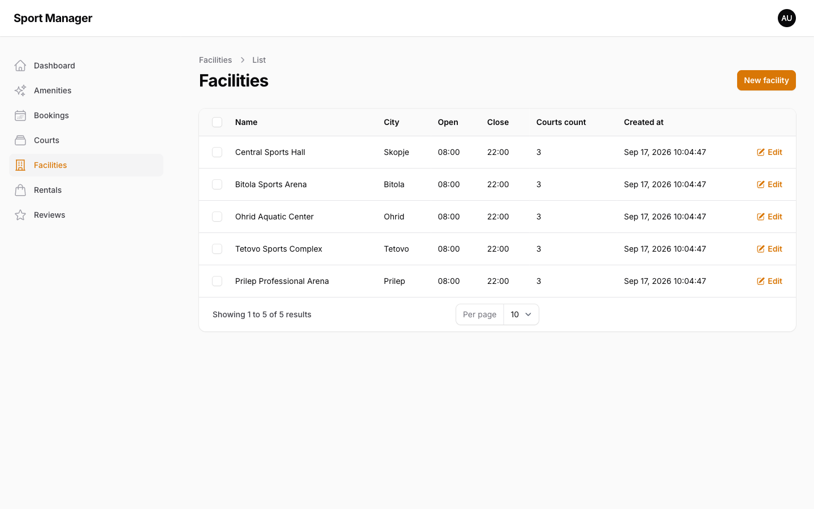
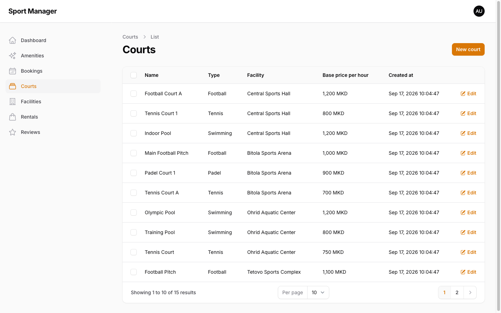
At the bottom of each facility's edit page administrators see a Facility Managers section that managers do not. Assign Manager opens a picker limited to users who hold the manager role; assigning one gives that person access to this venue in their panel from their next page load. Unassign removes it just as quickly. A user with the manager role but no assigned facility cannot sign in to the panel at all, which means a departed employee is locked out the moment their last assignment is removed.
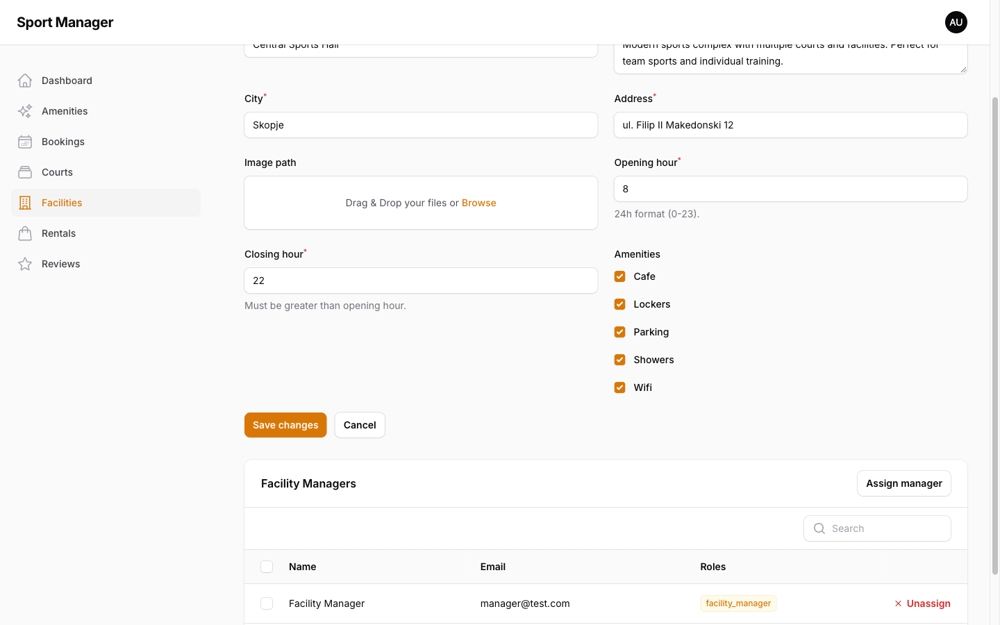
These are the business rules the software guarantees regardless of who is clicking. Each one is checked on the server, and the important ones are also backed by the database so that no path around the interface can break them.
The base price is the court's hourly rate multiplied by the number of hours, with a minimum of one hour. Bookings that start between 18:00 and 21:59 carry a peak surcharge of twenty percent. Bookings that start on a Saturday or Sunday carry a weekend surcharge of ten percent, applied after the peak surcharge. Equipment is added last at its listed price times quantity. The total is stored with the booking, so a later price change at the venue never alters what a player already agreed to pay.
Worked example. Football Court A costs 1,200 MKD per hour. A player books Saturday 18:00 to 19:00 and adds one ball at 300 MKD.
Base: 1,200. Peak +20%: 1,440. Weekend +10% on top: 1,584. Ball: 1,884 MKD total, exactly as the booking panel in section 3 shows.
Slots are one hour long and run from the venue's opening hour to its closing hour. A slot in the past cannot be booked, even by editing the request. A slot that overlaps any confirmed, checked‑in or completed booking on the same court is not available. Cancelled bookings release their slot. When a booking is confirmed, the system re‑checks for overlap inside a transaction and then writes the new booking. Because the public site only books whole, aligned hours, two simultaneous attempts on the same slot collide on a database uniqueness rule for court, start and end time, so one succeeds and one is refused.
A player may cancel only their own booking, only while it is still confirmed, and only if it starts more than 24 hours from the moment of cancellation. Inside that window the option is not offered and a direct request is refused with an explanation.
A player may review a venue only after having at least one booking there that was not cancelled. Each player may leave one review per venue; the database itself refuses a second. Ratings are whole numbers from one to five. Comments are optional and capped at a thousand characters.
The admin panel admits administrators and managers assigned to at least one facility; everyone else is turned away. Inside it, every list, form and save a manager touches is restricted to their facilities. Public sign‑in is limited to six attempts per minute per address.
Sport Manager is a single server‑rendered web application. There is no separate front‑end project and no mobile app; the browser talks to one Laravel application that renders pages and handles every interaction. This keeps the codebase small and puts all business rules in one place.
Laravel 11 on PHP 8.2 is the framework. It handles routing, authentication, sessions, validation, database access and the queue. It was chosen because the product is form‑heavy and database‑driven, which is exactly what Laravel is good at, and because it comes with mature answers for the boring but critical parts such as password hashing and request throttling.
Livewire 3 powers the public pages. It lets the server render the page and then update parts of it in response to user actions, such as changing a filter or ticking a rental, without a full reload and without writing a separate JavaScript application. Every rule stays in PHP, on the server, where it can be trusted. Tailwind CSS provides the styling.
Filament 3 is the admin panel. It generates lists, forms and actions from the data models, so the manager and administrator screens are built by declaring what each role may see and do rather than by hand‑writing pages. Filament Shield adds role management.
Spatie Permission stores roles. Three roles matter: player, facility manager and administrator. Facility scoping is not a role; it is a many‑to‑many link between managers and facilities, which is why a manager can be responsible for several venues.
PostgreSQL is the database in development and deployment. The automated tests run against an in‑memory SQLite database so they are fast and never touch real data.
Docker packages the application, a queue worker and PostgreSQL into three containers that start with one command. Google Gemini is an optional dependency used only by the chat assistant when a key is supplied.
Seven kinds of records make up the business data. A facility is a venue with an address, opening hours and a set of amenities. It owns courts, each with a sport and an hourly price, and rentals, each priced and tagged with the sports it suits. A booking joins a user to a court for a start and end time, carries a status, the total price agreed, and the QR code, and may have rentals attached with quantities. A review joins a user to a facility with a rating and comment. Amenities are a shared list that facilities pick from. Managers are linked to the facilities they run.
Two details are worth knowing. All records except users use random identifiers rather than sequential numbers, so a public address like /facility/a2c41fad‑… reveals nothing about how many venues exist. And every price is stored as an integer number of hundredths of a denar, never as a decimal, so totals are exact and never drift by a rounding error.
The application ships with 47 automated tests that currently pass in about two to three seconds. They exercise the rules from section 6 directly rather than the screens, which makes them fast and stable. Pricing is covered at the unit level: base price, minimum one hour, multi‑hour, the exact 18:00 and 22:00 boundaries of the peak window, weekend, and both surcharges stacked. Booking is covered end to end: a signed‑in player can book, an anonymous visitor is sent to sign in, a past slot is refused, a taken slot is refused, rentals are attached and priced, cancellation is allowed outside 24 hours and refused inside it or by the wrong user. Reviews are covered for eligibility, the cancelled‑booking exclusion, duplicates, rating range and comment length. Admin access is covered for the role rules, manager scoping across facilities, courts, rentals and reviews, and the amenity restriction. The chat assistant is covered for rendering, suggestions, demo answers and the prepare‑then‑confirm booking flow.
The intended way to run Sport Manager is with Docker. One command builds the image, starts the application, a background worker and PostgreSQL, creates the configuration file, generates the application key and runs the database migrations.
docker-compose up --build
The site is then at http://localhost:8000 and the admin panel at http://localhost:8000/admin. To load the sample venues, courts, rentals and accounts used throughout this document:
docker-compose exec app php artisan db:seed
To run the automated tests:
docker-compose exec app php artisan test
The seed creates one account per role, all with the password password. The administrator is admin@test.com. The facility manager is manager@test.com and is assigned to Central Sports Hall and Tetovo Sports Complex. The player is user@test.com.
The time zone must stay Europe/Skopje, as shipped, or morning slots would be marked past too early. The Gemini key is optional: empty means Sporty runs in demo mode.
Sport Manager does what the previous pages describe and nothing more. The following are the known gaps, in the order they would matter to a real deployment.
None of these change the shape of the system. The rules in section 6 and the structure in section 7 are the parts that would stay as the product grows.